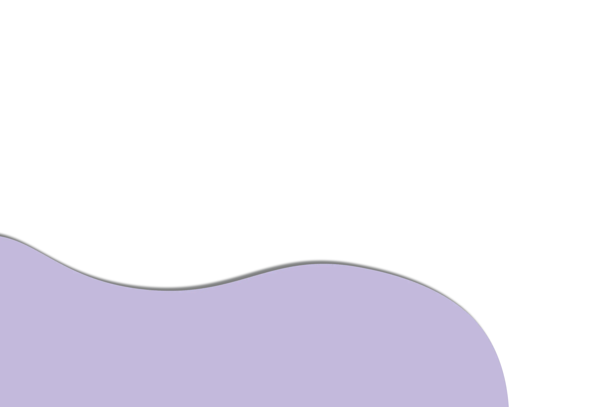
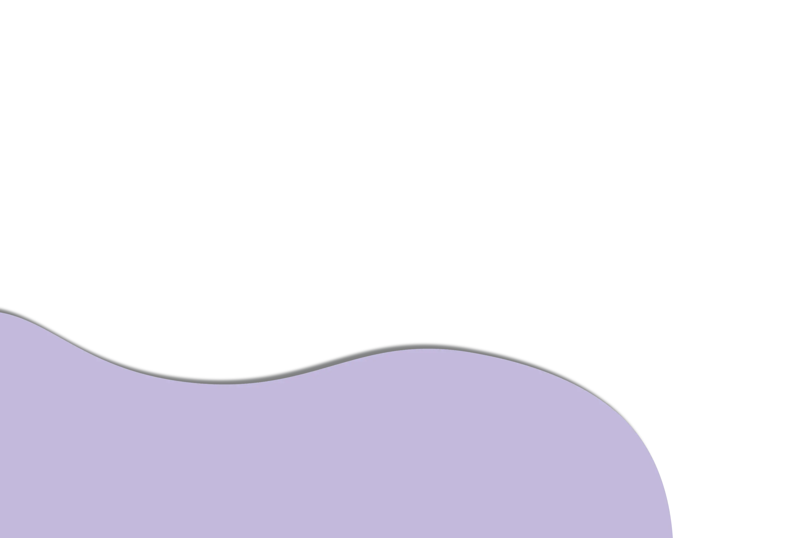

Balisong was traditionally known to be crafted in the town of Taal in Batangas. History recounts that a certain Perfecto de Leon invented Balisong as a deadly weapon.
Known as a butterfly or fan knife, Balisong gets its name from the two handles that open from which the blade is being hidden. It has a beautifully carved horn handle, from where the name balisong, or "baling sungay", is thought to have originated.
 Back

Back
